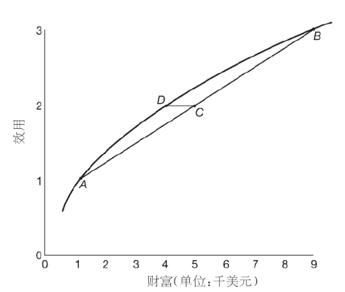
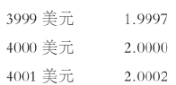
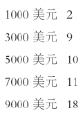
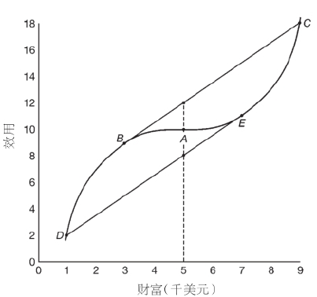

我们现在暂且离开正题，来讨论在赌局中作选择的一个特例，那就是所有的回报都是一定金额的金钱。我将主要在概率给定（而不是未定）的背景下来讨论。但是，根据第三章中的讨论，概率给定的情况也可以在另一个背景下来解释，即用主观概率来代替给定概率。
我们可以用最终财富或得失数字两种形式来表达涉及金钱的赌局。例如，假设你的现有财富是5000美元，那么如果某个赌局使你的最终所得变成要么是4000美元，要么是6000美元，就可以表示为你要么获得1000美元，要么损失1000美元。我将根据不同情况，灵活使用这两种表述方式。为了作出区分，我在用得失法表示赌局时，在金额数字前加上加号或减号。
我将假定财富连续变化，这么假定的原因你随后就会明白。我还将允许讨论涉及任何赌局（除了那些可能使你的财富降为负数的赌局），不管这些赌局可能在多大程度上增加你的财富。（在此顺便提一下，这也意味着存在无穷多的回报。）

图9效用分配方案：该赌局可能使你的财富变为A点或B点，两种变化概率相等；该赌局的期望价值是你在C点的财富；该赌局的确定性对等物是你在D点的财富。这个赌局的风险酬金等于C和D两点之间的距离。
在第三章所作研究的基础上，我们可以为每个可能的回报指派基数效用。如果我们认为你从某个给定水平的财富开始，这就相当于为每个财富水平指派效用，或者说规定一个效用分 配方案 。比如，你的效用分配方案可能为每个财富水平（以千美元为单位）指派该水平的平方根。举例来说，在这种情况下你将给4000美元指派效用2。（我将把这个分配方案称为平方根分配方案。）一个效用分配方案可以用图表说明，横轴代表你的财富，纵轴代表你的效用。这样的分配方案（事实上是平方根分配方案）如图9所示。
该图具有多个属性。首先，曲线向上倾斜：我有充分理由假定，你喜欢财富越多越好。这正是曲线向上倾斜的原因。其次，曲线是凹的，即连接曲线上任何两点的线段都整体位于曲线之下：我将留到以后再来讨论这一重要属性。再次，曲线是连续的，即没有跳跃。这一属性隐含在曲线内凹的形状中：画一幅带有跳跃的曲线，你就可以在两点间画一条线，这条线不会整体处于曲线之下。
我将用到赌局的两个方面：它的期望价值 和确定性对等 物 。某个赌局的期望价值可以通过下列方法来计算：将每个回报乘以它的概率，然后将所得数字相加。例如，赌局“以概率0.2获得9000美元，以概率0.5获得5000美元，以概率0.3获得1000美元”的期望价值（以千美元为单位）等于：（9×0.2）+（5×0.5）+（1×0.3），即4600美元。［期望价值与期望效用类似。但是，期望价值仅在所有回报都用同一单位（如美元）衡量时才有意义。如果不同回报的单位不同，我们就不能笼统地把它们与概率相乘，再把结果相加。］如果某个赌局的期望价值为0，我把这样的赌局称为“公道的”；如果期望价值为正，则称赌局为“有利的”；若期望价值为负，则称为“不利的”。（“公道的”在这里只用做统计学术语，没有任何伦理含义。）
某个赌局的确定性对等物是你愿意接受用来替代该赌局的金额，或者说，你愿意支付以得到该赌局的金额。更确切地说，确定性对等物指一定数额的金钱，如果能够确定得到这笔钱，你将认为它和该赌局无差异。显而易见，一个赌局有且只有一个确定性对等物。［如果我们不允许财富连续变化，只能以一定数额（如1美元）跳跃式变化，那么情况就会不同：可能你会认为1000美元不如某个赌局，而1001美元又比该赌局好。］
为说明确定性对等物的计算过程，假设你以平方根分配方案来指派效用，让我们试着分析这样一个赌局：如果接受该赌局，你的财富要么增加到9000美元（此时你的效用为3），要么减少到1000美元（此时你的效用为1），两种情况出现的概率相等。该赌局的期望效用为2，确定性对等物就是当你的效用等于期望效用（即等于2）时，你的财富水平（也就是说，等于4000美元）。如上图所示：该赌局的结果是你的财富变为A点或B点；你的期望效用等于你在C点的效用；而确定性对等物等于你在D点的财富。
如果就某个赌局而言，你喜欢在确定性条件下的期望价值胜过该赌局本身，那么我会说，你是风险厌恶 的。同样，如果期望价值大于确定性对等物，你也是风险厌恶的。反之，如果你喜欢赌局胜过它的期望价值，或者期望价值小于确定性对等物，你是风险喜好 的。期望价值与确定性对等物之间的差额被称为该赌局的风险酬金 。对于我们刚才讨论的那个赌局（以同样概率使你的财富可能变为9000美元或1000美元），它的期望价值为5000美元，因此风险酬金就是5000－4000美元，即1000美元。这也反映在上图中：该赌局的期望价值是你在C点的财富；而风险酬金等于C和D两点之间的距离。
显然，如果一个赌局的风险酬金为正，对于该赌局来说，你就是风险厌恶的；反之，如果风险酬金为负，你就是风险喜好的。如果你对于任何赌局都是风险厌恶的，那么我会说，你是（无条件）风险厌恶的。如果你对于任何赌局都是风险喜好的，那么我会说，你是风险喜好的。显而易见，如果效用分配方案的曲线是凹的，你就是风险厌恶的；反之，如果曲线是凸的，你就是风险喜好的（凸与凹正好相反）。
看起来风险厌恶是正常的。如果你认为自己是风险喜好的，下面的例子或许会改变你的想法（这个例子由丹尼尔·伯努利提出，我们在第三章已经提到过他。因为这个例子最早在俄罗斯圣彼得堡科学院的报告中被提到，所以得名）。
一个赌局通过多次抛掷一枚硬币、直至出现一次正面朝上来得到结果：如果只需掷一次，回报为2美元；如果掷两次，回报为4美元；如果掷三次，回报为8美元，依此类推。你需要为这个赌局准备多少钱？也就是说，你的确定性对等物是多少？暂停并思考。
如果你准备支付的金额少于该赌局的期望价值，你就是风险厌恶的，至少就这个赌局而言。尽管可能出现的回报数目是无穷的，但很容易计算出期望价值。在下表中，第一行给出数字n，表示掷出一次正面朝上所需的次数。第二行是掷n次的情况下所得的回报。第三行是需要n次才能掷出正面朝上的概率（实际就等于获得n个规定结果的概率，其中每个结果的概率为0.5，连续相乘）。第四行是由第二行的回报乘以第三行的概率所获得的结果。
把第四行中的数额相加就得到期望价值。因为这是对一个单项为1美元的无穷数列进行加总，所以总和是无穷大。因此，尽管你也许急匆匆地答应为这个赌局付1美元，你还是风险厌恶的。再次暂停并思考：根据现有讨论，你会准备付多少？随机观察显示，通常人们愿意付16美元。
既然我们大家似乎都是风险厌恶的，从现在起，我将假定这一点。试回想，风险酬金是正的，因此当且仅当你的效用分配曲线是凹的，你是风险厌恶的。其实，效用分配曲线凹的幅度越大，风险酬金越高，因此你厌恶风险的程度也越高，这一点看似很合理。这说明，我们可以把某个财富水平点上的曲线凹度解释为你在该水平的风险厌恶量度 。
如果想要这么做，我们必须能够测量曲线的凹度。我们可以在任何财富水平上测量效用分配曲线的斜率。对于任意小的财富变化来说，曲线斜率等于其垂直变化，或者说效用变化，除以其横向变化，或者说财富变化（因此，某一点的斜率就等于该点财富的边际效用）。随着财富水平变化，斜率也随之变化：如果曲线是凹的，斜率变得越来越平坦，或者说，随着财富增加，斜率减小。曲线的凹度由斜率减小的比例幅度（即斜率减小的幅度除以斜率本身）来衡量。
为说明风险厌恶量度的计算，假定你的效用分配方案是平方根分配法。那么在4000美元左右的财富水平，你的效用（大约）是：

效用分配曲线的斜率在略低于4000美元的水平等于2.0000－1.9997，即0.0003；而曲线斜率在略高于4000美元的水平等于0.0002。因此，斜率减小的幅度等于0.0001；再除以斜率本身的平均值，即除以0.00025，从而得到减小比例幅度，或者说风险厌恶量度，等于0.4。（当然这只是大约值，因为财富变化的幅度是以1美元为单位，而不是任意小的变化；此外，还有小数点进位的误差。）
还需要再确认，这一量度方式究竟在多大程度上有效。首先要注意的是：如果你的效用以线性方式变换，你的风险厌恶量度不会变化。这是因为，如果把所有效用都翻倍，斜率和变化幅度也都翻倍。而如果把所有的效用都加上7，斜率和变化幅度都不会变化。
现在来考虑我们怎样比较你我各自的风险厌恶。一个简单的方法是：如果我愿意接受任何你接受的赌局，但反之则不然，那么你比我更加厌恶风险 。显而易见，当且仅当你对任何赌局的风险酬金大于我的，这一点才成立。但是，在你比我更加厌恶风险这一判断和我们的风险厌恶量度之间有没有任何联系？答案是有。当且仅当在任何财富水平上你的风险厌恶量度大于我的时，你比我更加厌恶风险。
到目前为止，我们对风险厌恶的量度看起来无懈可击。要明白哪里可能会有问题，我们需要来考虑一个赌局比另一个更 具风险 究竟意味着什么。试考虑下列两个公道赌局：赌局X“以概率0.4得到150美元，以概率0.6失去100美元”，和赌局Y“以概率0.2得到400美元，以概率0.8失去100美元”。假设你选择赌局X，并且如果获胜，下注250美元掷硬币。也就是说，进一步选择赌局“以概率0.5得到250美元，以概率0.5失去 250美元”。（如果在赌局X中失利，你不再继续。）采用在第三章中已经讨论过的评估复合赌局的方法，不难发现这个两阶段的赌局相当于单阶段的赌局Y。因此，赌局Y可以被看做赌局X加上一个公道赌局：我们可以很合理地说，Y比X更具风险。更普遍地，在比较公道赌局时，如果第一个公道赌局相当于第二个再加上一个或多个公道赌局，那么第一个公道赌局就比第二个更具风险。
对于非公道赌局，我们可以通过它们的风险部分，即它们相对于期望价值的得失，来比较它们的风险性。更确切地说，一个赌局的风险部分 是该赌局所有的回报之和减去它的期望价值；这当然是一个公道赌局。比如，赌局Z“以0.2的概率得到500美元，以0.8的概率一无所得”，它的期望价值是100美元，而它的风险部分则是公道赌局Y。一般来说，如果第一个赌局的风险部分比第二个赌局的风险部分更具风险，那么第一个赌局就比第二个更具风险。
现在我可以回到本书主题。让我们来考虑两个赌局X和Y，两者具有相同的期望价值。如果你是风险厌恶的，那么不出所料，只要X的风险小于Y，你总会选择X而不是Y。到目前为止这很正常。但是现在来考虑两个新的赌局U和V：U比V具有更高的期望价值，但是也更具风险。如果你选择U而不是V，并且你比我更加厌恶风险，那么很自然我也会选择U而不是V。如果更高的期望价值对你来说是对额外风险的补偿，那么对我来说同样如此。如果V是个简化赌局，那么显而易见，情况就是如此。但是，一般来说，情况并非如此。
于是我们已经有了一个问题。看起来我们要么是对于风险厌恶的量度，要么是对于一个赌局比另一个更具风险究竟意味着什么这一点的理解，存在着漏洞。你要修正哪一个？
赌博（日常生活中的口头用法）和保险都涉及接受一个赌局（选择理论的术语用法）。赌博涉及接受一个新赌局。如果你在一局轮盘赌中下注100美元赌红色，那么你就接受了赌局X，它的回报是得到100美元（红色出现）和失去100美元（红色没有出现）。保险涉及接受一个赌局，它将抵消另一个已有的赌局。如果你有一辆价值5000美元的车有可能被偷，那么你已经有一个赌局Y，它的回报是：失去5000美元（车被偷），一无所失（没有被偷）。如果你随后接受赌局Z，它的回报是：得到4940美元（车被偷），失去60美元（没有被偷），那么你最终就是接受了净（简化）赌局，它的回报是：失去60美元，不管你的车是否被偷。接受赌局Z抵消了你的原有赌局Y：它以保险费60美元进行了投保。
如果轮盘赌只有一个轮槽为零，那么其他轮槽就包括18个红色槽和19个非红色槽（零既非红色，也非黑色），所以你的轮盘赌局X的期望价值即为：（+100×18/37）+（-100×19/37），即约等于-3美元。如果你的车被偷的概率为0.01，那么你的保险赌局Z的期望价值即为：（4940×0.01）+（-60×0.99），即-10美元。所有的商用轮盘赌都有零槽，所以在赌场玩轮盘赌就是在接受不利赌局。（所有有组织的赌博都是对游戏者不利的：极端的例子是国家彩票。下注100美元通常相当于接受一个期望价值为-50美元的赌局。）既然保险公司有成本，那么保险也相当于接受不利赌局。
图10轮盘赌，棕榈滩县
在不利条款下进行赌博或保险都没有任何不合理之处。但是，显而易见，如果你是风险厌恶的，那么你不会在不利条款下赌博，尽管你可能会保险。同样，如果你是风险喜好的，那么你不会在不利条件下保险，尽管你可能会赌博。但是，随机观察发现似乎很多人在不利条款下，既赌博也保险：他们买国家彩票，又给车上保险。如果你买了国家彩票，那么你一定是风险喜好的；如果你给车买保险，你一定是风险厌恶的。你怎么可能同时做这两件事呢？
我们对于这一难题的解答取决于这样一个事实：你可能在财富的某些水平上是风险厌恶的，但在另外一些水平上则是风险喜好的。尤其是你在贫穷的时候可能回避风险，但当你变富之后就会准备去冒险。回想一下，如果你是风险厌恶的，那么你的效用分配方案的曲线就是凹的；如果你是风险喜好的，曲线就是凸的。但是，如果你在财富较低水平是风险厌恶的，而在较高水平是风险喜好的，那么你的效用分配曲线就是在低水平凹，而在高水平凸。
举例来说，假设你现有的财富是5000美元，你的效用分配方案如下：

首先考虑下注2000美元赌一匹赛马，赔率是2比1。这个赌局将会以1/3的概率（你的马赢了）使你的财富增加到9000美元，或者以2/3的概率（你的马输了）使你的财富减少到3000美元。赌局的期望效用为：（18×1/3）+（9×2/3），即等于12。这超过了你现有财富的效用（等于10），所以你将接受该赌局。
现在考虑你的保险决定。你可以为价值6000美元的车投保，保费为2000美元。你的确定财产为5000美元，这意味着你的车已经被保险：你必须选择是否取消你的保险。取消涉及接受一个新赌局，它将使你的财富以2/3的概率增加到7000美元（车没有被偷），或者以1/3的概率减少到1000美元（车被偷了）。这一新赌局的期望效用为：（11×2/3）＋（2×1/3），即等于8。因为这少于你的现有财富（还是等于10），你将不会接受这个新赌局，即你将投保。注意，这个例子显示，你可能在公道条款下同时进行赌博和保险。显而易见，如果条款变得略微有些不利，你还是会继续同时赌博和保险。
如图所示，你的现有财富为A点。赛马赌局将使你的财富变为B或C，因为你的期望效用高于你在A点的效用，所以你接受该赌局。新的保险赌局将会使你的财富变为D或E，你的期望效用低于你在A点的效用，所以你不接受该赌局（即选择投保）。
尽管这个解决方案颇为巧妙，但人为构造的痕迹略显突出。它不仅要求你的效用分配曲线具备所需的形状，而且要求你的现有财富在所需位置：你的财富不能高于E点（否则你就不会保险），也不能低于B点（否则你不会赌博）。
另一种解答是：人们在所有财富水平都是风险厌恶的，因此他们在不利条款下投保但不赌博：他们只是看起来要赌博而已。如果阿尔克夫赢得马赛的赔率是2比1，而你认为它获胜的概率是0.4，那么即使你是风险厌恶的，你也可以下注赌它赢。因为你这样做等于是接受一个赌局：“以概率0.4得到200美元，否则失去100美元。”该赌局的期望价值是20美元。

图11赌博与保险：如果你的财富为A，你将接受某个公道赌局，它使得你的财富可能变为B或C，但拒绝另一个公道赌局，它可能使你的财富变为D或E。
你可以很合理地相信阿尔克夫获胜的概率为0.4：信心，就像品位一样，是主观判断。你应该明白赌马组织者也有成本，因此随意对赛马下注就是在不利条款下进行赌博。但你会认为自己有一些私人信息，并不是在随意下注：你，且只有你，看到阿尔克夫眼神里的光芒，它要统治赛场。通常你的这种迷信都是错误的，但那是另一回事。
表面看来，这个解决办法在轮盘赌或国家彩票的例子中不如在赌马例子中那么可信。的确，每个人都知道在轮盘赌和彩票例子中所有数字都以均等机会出现。你或许知道这一点，但还是有无数的书和方法在告诉你怎么赢得轮盘赌或者在买彩票时选哪几个数字，这说明并非每个人都知道。
我现在回到第三章提出的问题：基数效用是否能为赞成财富再分配的观点提供理论基础。回想一下，尽管当采用序数效用时，边际效用的概念没有意义；但当采用基数效用时，它就有一定意义。这是因为如果在某种基数效用指派方式下，你指派给1000美元和2000美元的效用之间的差额大于指派给8000美元和9000美元的效用之间的差额，那么在任何指派方式下，前者都大于后者。但这意味着什么？这意味着你是风险厌恶的，仅此而已。尤其是，这并不意味着如果1000美元从某个有9000美元的人手中转移到某个只有1000美元的人手中会产生净收入。其他且不论，这将涉及对不同人的效用进行没有依据的比较。在本例中，更确切地说是把某种对快乐或福利的量度仅仅解读为用数字方式来表示对风险的态度。即使我们能忽略人际之间比较的问题，用基数效用来支持财富再分配，我们也只是基于人们对风险的态度来进行再分配。如果人们是风险喜好的，那么在此基础上的再分配将是“劫贫济富”。
另一种更为缜密的为再分配辩护的做法是使用一张想象的无知面纱 。假设每个人都来斟酌全部可能的财富分配方案。对于1000万人口的集合来说，分配方案可能包括：
100万人得到1000美元，500万人得到4000美元，还有400万人得到8000美元
100万人得到1000美元，还有900万人得到5000美元
1000万人得到2000美元
并非所有分配方案都具有相同总和，但从中我们可以发现，财富分配方案需要我们参与，并且一些方案比其他方案为我们的参与提供了更多激励。
这些人在不知道自己在这些分配方案中所处位置（即在初次分配时，不知道他的财富究竟是1000美元、4000美元，或是8000美元）的情况下，每个人选择一种分配方案。据称，每个人将选择某个分配方案，使得最穷的人（或者最穷的人群）获得最大数额：在现有的例子中，每个人将选择“1000万人得到2000美元”。另据称，在无知面纱下人们选择的分配方案是公正的，并且如果真实分配方案不同于所选方案，就有理由进行再分配。这就是由哲学家约翰·罗尔斯（生于1921年）提出的差异原则：
第一个声明，即每个人会选择给最贫穷的人最大数额的分配方案，是很实际的，且直接和选择理论相关。在面纱背后，你不得不从一些赌局中进行选择，比如下列三个：
以概率p得到1000美元，以概率q得到4000美元，剩余情况则得到8000美元
以概率r得到1000美元，剩余情况则得到5000美元
以概率1得到2000美元
如果你是极端风险厌恶的，你将单选这三个赌局中的最后一个。确实，如果你喜欢第三个赌局胜过第二个，那么不管你以概率r得到的价值是多少，你都违反了连续条件。因此声称每个人将选择给最贫穷的人最大数额的分配方案，这一点似乎不能成立。
第二个声明，即在无知面纱背后，人们选择的分配方案是公正的，并且如果真实分配方案不同于所选方案，就有理由进行再分配。这个声明属于伦理学范畴：选择理论将无法说明这一点。但是，我顺便提一下，还有其他观点。其中之一是如果某种财富分配方案是自愿行为的结果，而不是出于其他原因，那么它就是公正的。如果你比我有钱，因为你勤奋工作，而我很懒，这就无话可说了：任何人都不该把你的财富分拨给我。这就是罗伯特·诺齐克（我们在第三章已提到过他）所阐发的理论：
在所有回报由金钱数额组成的赌局中，你的选择体现了你对风险的态度。
赌局的风险酬金等于：（1）赌局的期望价值，即把每个回报乘以相应概率，再把所得数字相加；减去（2）赌局的确定性对等物，即你愿意接受用以替代该赌局的金额。
在某个财富水平上的风险厌恶量度是效用分配曲线在该水平上斜率减小的比例幅度。
如果我愿意接受你所接受的任何赌局，但反之则不然，那么你就比我更加厌恶风险。
你比我更加厌恶风险，当且仅当（1）对于所有赌局你的风险酬金都大于我的风险酬金，并且（2）在任何财富水平你的风险厌恶量度大于我的风险厌恶量度。